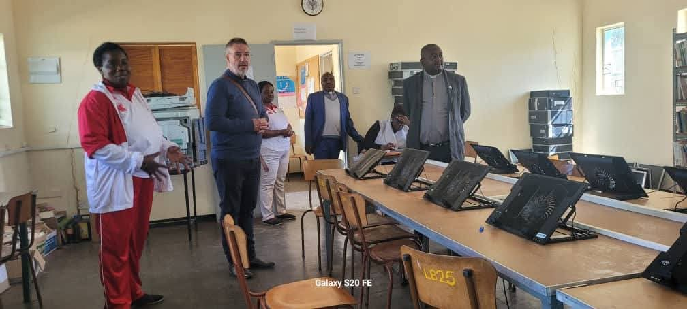
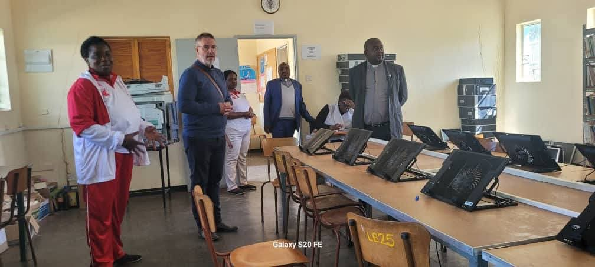

Clergy and Church

Clergy members at the church entrance
The school itself is located about 34km northeast of Gweru city, in Chief Gambiza Communal areas, and was established in 1969. It is an Anglican mission school offering both day and boarding facilities. The school runs from Form 1 to Form 6 and offers a wide range of academic subjects and extracurricular activities.
To be a leading institution of academic excellence, spiritual growth, and holistic development, nurturing responsible and well-rounded individuals who positively impact their communities and beyond.
To provide high-quality education in a Christian environment, promoting intellectual, moral, physical, and emotional development. We are committed to fostering a love of learning, discipline, and leadership among students.


 



Clergy members at the church entrance
The school’s main dining hall for boarders
Headmaster and school stakeholders in a formal setting
Students participating in the LEO club activities
Students' access to computer facilities and learning
St. Patrick’s school bus, supporting safe student travel
The talented choir during performance practice
Group photo of dedicated teachers at St. Patrick’s